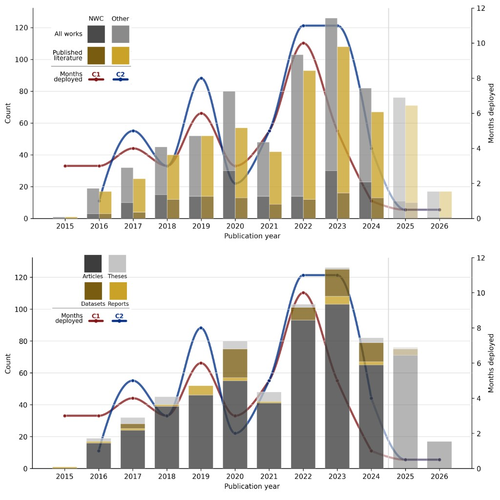
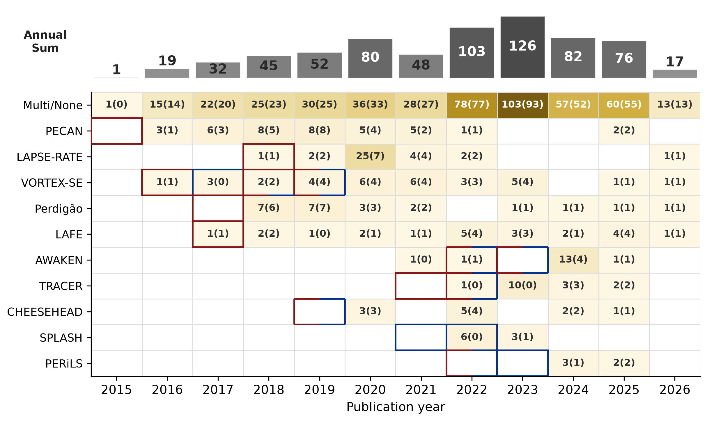

Corpus figures
Annual bibliometric summaries from the 726-work review corpus:
a two-panel bar chart (affiliation and work type, with CLAMPS1/CLAMPS2 deployment months)
and a campaign-by-year heatmap.
Regenerate with python scripts/plot_review_figures.py or the Binder notebook below.


Summary tables
Tabular exports accompanying the figures. Corpus summary (CSV) · Impact summary (CSV)
| Subset | Notes | NWC affiliated | Non-NWC | Total |
|---|---|---|---|---|
| Full review corpus | 726 works; all inclusion streams | 166 | 560 | 726 |
| Articles + reports | Publication-type subset | 107 | 483 | 590 |
| Peer-reviewed articles & review papers | Excludes peer-review comments | 98 | 419 | 517 |
| Theses & dissertations | Manual acceptance via Channel H/F | 19 | 10 | 29 |
| All datasets | 107 validated deposits; affiliation not applied | — | — | 107 |
| Impact metric | Count | NWC | Non-NWC | Notes |
|---|---|---|---|---|
| Peer-reviewed — high-confidence metadata | 517 | 98 | 419 | Upper bound before PDF verification |
| Peer-reviewed — PDF CLAMPS confirmed | 517 | 98 | 419 | Conservative impact count from full-text search |
| Substantive use — Tier 1+2 (PDF-confirmed) | 21 | 3 | 18 | Data use, analysis, or discussion |
| Theses — metadata (all fields) | 29 | 19 | 10 | Includes non-meteorology false positives |
Quick reproduction (Binder)
Launch the Jupyter notebook on MyBinder (~20 s to rebuild corpus and figures after the environment builds).

Open notebooks/reproduce.ipynb on Binder
Download and run locally
cd bibliometrics
bash setup.sh
bash verify.sh
After regenerating figures, refresh page assets:
cp output/figures/fig_campaign_by_year.png figures/
and update figures/fig_annual_bars_with_deployments.png from your combined bar-chart export.
Full operational pipeline
For OpenAlex discovery, PDF/HTML scanning, and facility-specific configuration, see OPERATIONS.md and PIPELINE.md. Permanent archive and citation: ZENODO.md and CITATION.cff.